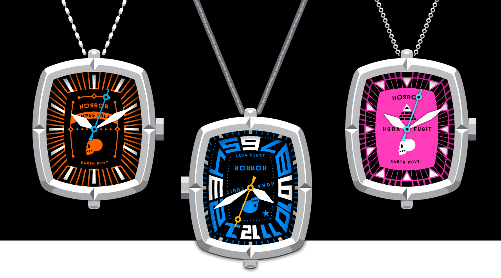

|
 The watch that's totally a watch but isn't a watch that's worn on the wrist (at least not necessarily) is the VVATCH Pendet. Your neck is ready. Taking its design cues from the VVATCH Prime, the Pendet is a capable timepiece with a daringly different fashion focus and a great party trick: you wear it in one direction as a clock for your own personal timetelling, or you flip it to make it a clock for everyone else. Whether worn over a cotton smock in the workplace or over a satin gown at a formal evening event, a VVATCH Pendet both makes you the center of attention and makes certain you're not late. You look marvelous!
Each VVATCH Pendet features:
♦ 316L stainless steel case with permanent bail at case top and at case bottom *Red ribbon not included—because maybe you'd prefer yellow, and we want you to be happy and free. Also, no one is stopping you from wearing a VVATCH Pendet on your wrist rather than around your neck. Just be smart about it, be careful. Or, instead, occasionally check in on HORROR's future projects for something designed specifically for the task.
© MMXXV HORROR VVORKS Inc
|